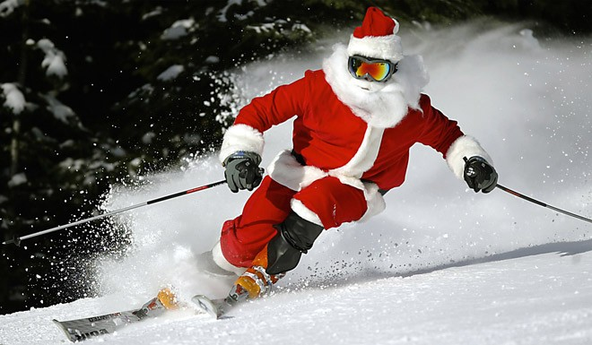
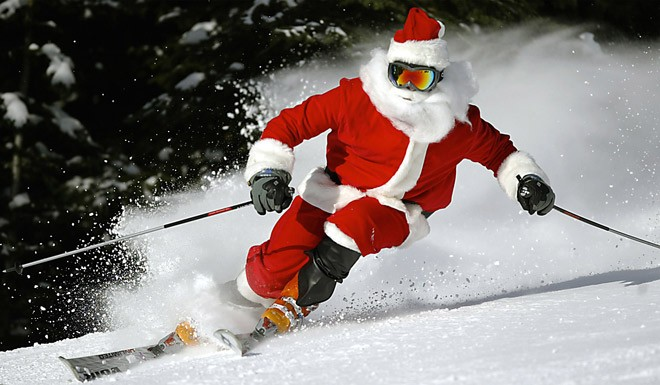

Skiing can be a means of transport, a recreational activity or a competitive winter sport in which the participant uses skis to glide on snow. Many types of competitive skiing events are recognized by the International Olympic Committee (IOC), and the International Ski Federation (FIS).
| Alpine | Also called "downhill skiing", Alpine skiing typically takes place on a piste at a ski resort. It is characterized by fixed-heel bindings that attach at both the toe and the heel of the skier's boot. Because the Alpine equipment is somewhat difficult to walk in, ski lifts, including chairlifts, bring skiers up the slope. Backcountry skiing can be accessed by helicopter, snowcat, hiking and snowmobile. Facilities at resorts can include night skiing, après-ski, and glade skiing under the supervision of the ski patrol and the ski school. Alpine skiing branched off from the older Nordic type of skiing around the 1920s when the advent of ski lifts meant that it was not necessary to walk any longer. Alpine equipment has specialized to the point where it can now only be used with the help of lifts. |
|---|---|
| Nordic | The Nordic disciplines include cross-country skiing and ski jumping, which both use bindings that attach at the toes of the skier's boots but not at the heels. Cross-country skiing may be practiced on groomed trails or in undeveloped backcountry areas. Ski jumping is practiced in certain areas that are reserved exclusively for ski jumping. |
| Telemark | Telemark skiing is a ski turning technique and FIS-sanctioned discipline, which is named after the Telemark region of Norway. It uses equipment similar to Nordic skiing, where the ski bindings are attached only at the toes of the ski boots, allowing the skier's heel to be raised throughout the turn. |
Equipment used in skiing includes:
Technique has evolved along with ski technology and ski geometry.
 
